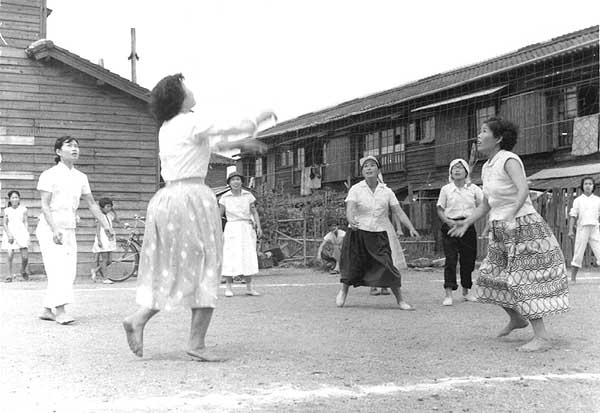
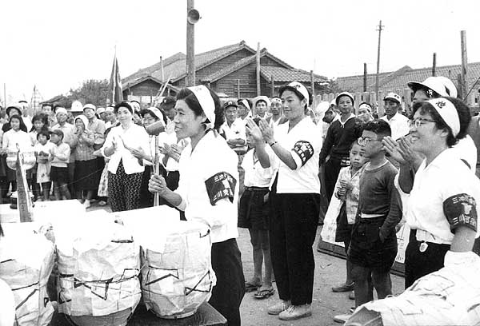
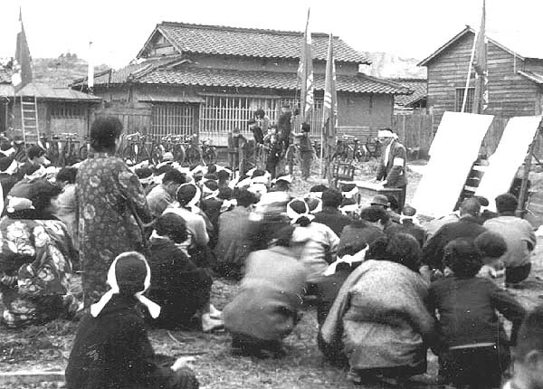
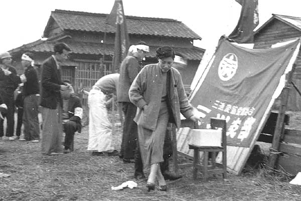
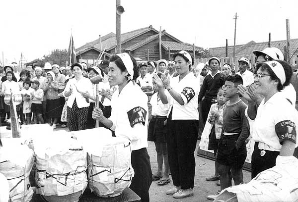
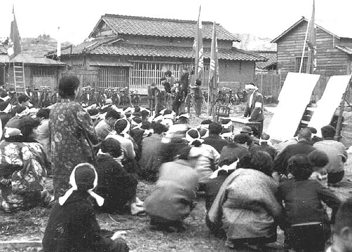
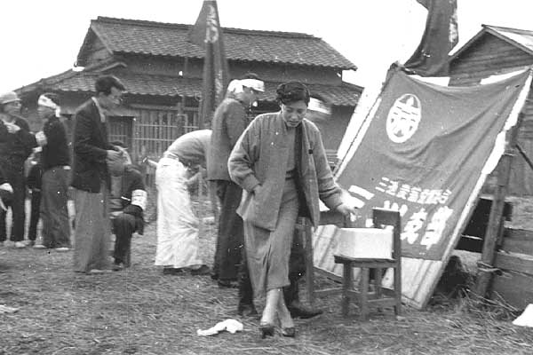
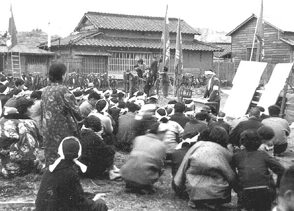
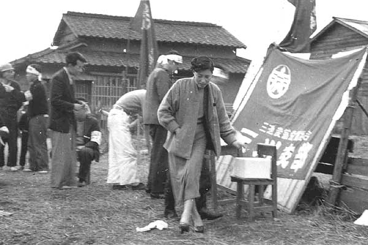
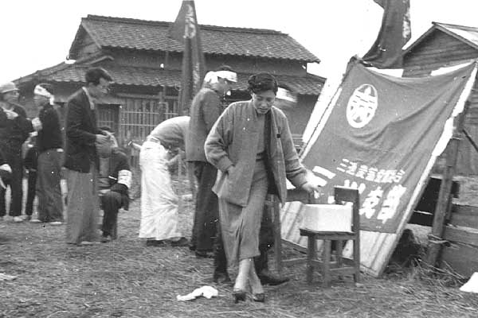

（写真：三池新労組「三池のあしあと1960 」より）  （写真提供：中山さん）  （写真提供：中山さん）  （写真提供：中山さん）  （写真提供：中山さん）
（写真提供：中山さん）  （写真提供：中山さん）  （写真提供：中山さん）  （写真提供：中山さん）
（写真提供：中山さん）  （写真提供：中山さん）  （写真提供：中山さん）
（写真提供：中山さん）  （写真提供：中山さん）
（写真提供：中山さん）